Day 01
Shinkyo Bridge
ขึ้นสะพานแดงศักดิ์สิทธิ์เหนือแม่น้ำไดยะ จุดเปิดทริปคลาสสิกของนิกโก้ หน้าหนาวราวสะพานมีหิมะเกาะ
ต่อคน¥300รวม 7 คน฿483
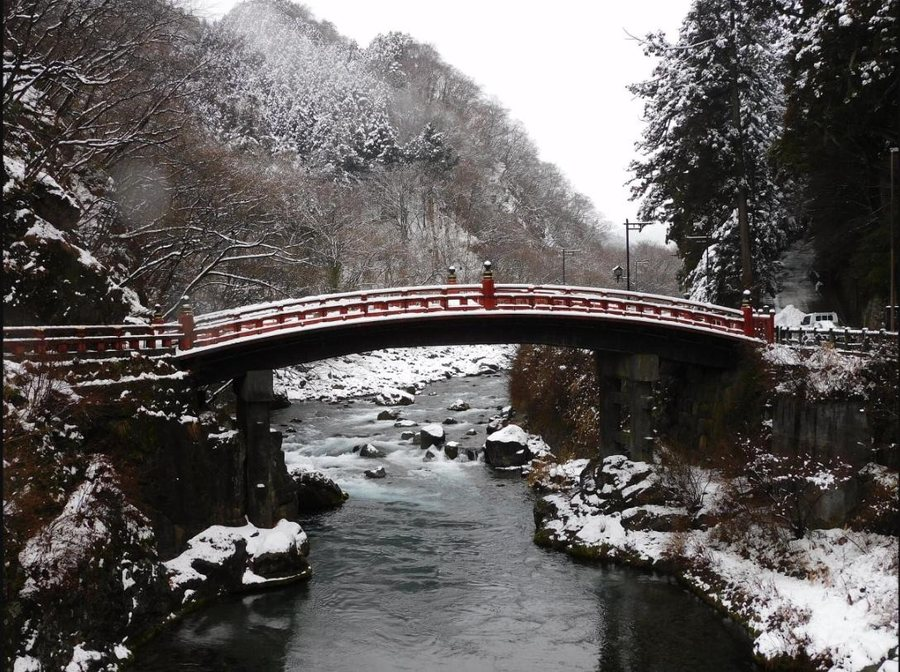
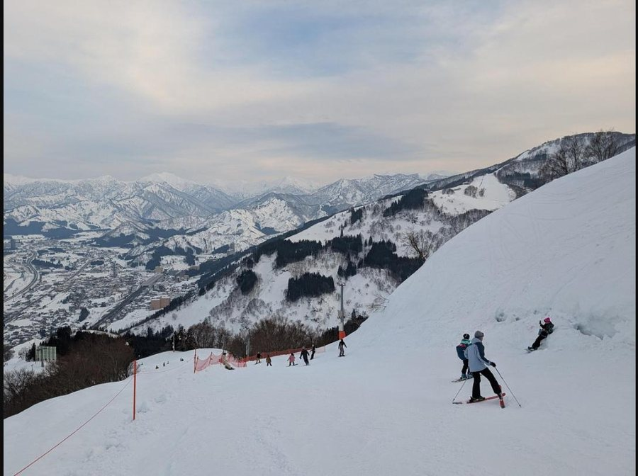

ตัวเลขทุกจุดในหน้านี้จะเปลี่ยนตามแผนที่เลือก
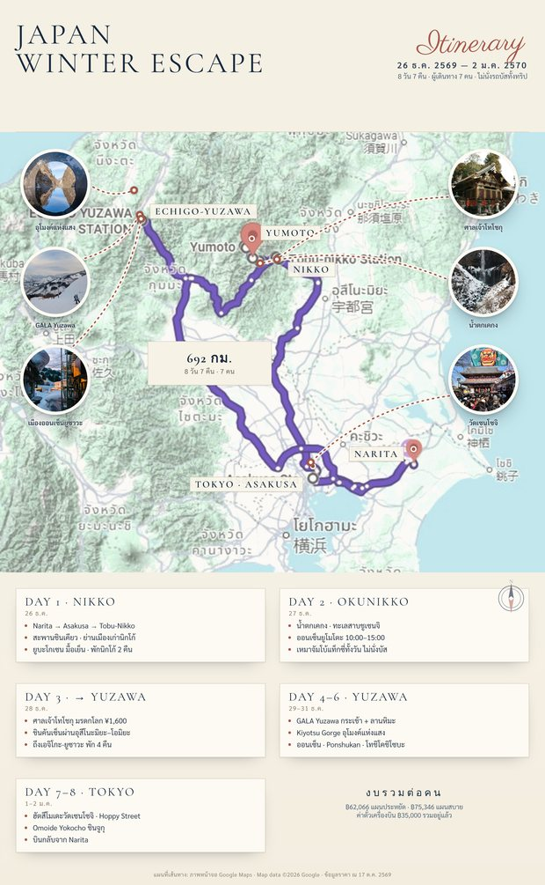
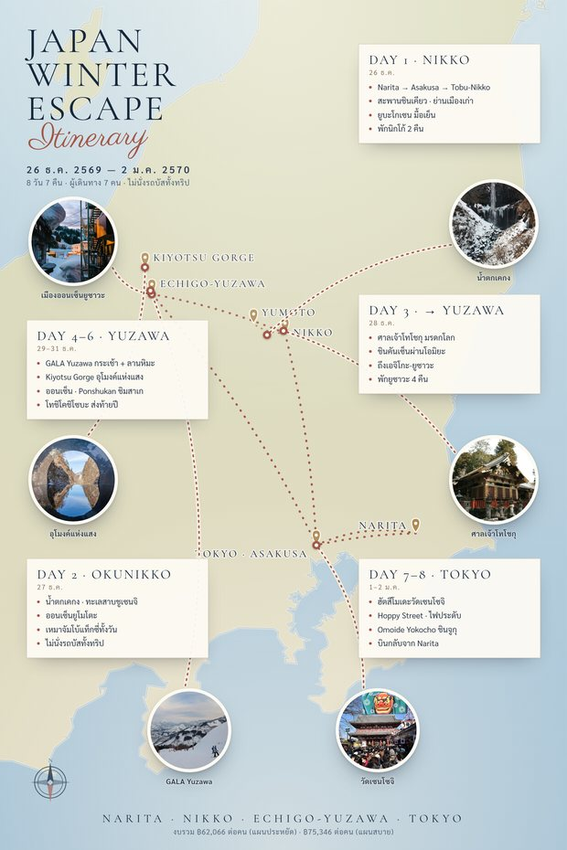

| หมวด | รายละเอียด | ต่อคน | รวม 7 คน |
|---|---|---|---|
| ตั๋วเครื่องบินกรุงเทพฯ – โตเกียว ไป-กลับ | กรุงเทพฯ – โตเกียว ไป-กลับราคาที่ Bankk แจ้ง | ฿35,000 | ฿245,000 |
| เดินทางในญี่ปุ่นรถไฟ ชินคันเซ็น และเหมารถ (ไม่ใช้รถบัส) | รถไฟ ชินคันเซ็น และเหมารถ (ไม่ใช้รถบัส) | ฿8,915 | ฿62,405 |
| ที่พัก 7 คืนNikko 2 · Yuzawa 4 (Kaido) · Tokyo 1 | Nikko 2 · Yuzawa 4 (Kaido) · Tokyo 1 | ฿20,307 | ฿142,151 |
| อาหาร + เครื่องดื่มร้านเล็ก ราเมง อิซากายะ เบียร์ธรรมดา | ร้านเล็ก ราเมง อิซากายะ เบียร์ธรรมดา | ฿6,647 | ฿46,529 |
| ค่าเข้า + กิจกรรมศาลเจ้า น้ำตก กระเช้า ออนเซ็น อุโมงค์ | ศาลเจ้า น้ำตก กระเช้า ออนเซ็น อุโมงค์ | ฿2,477 | ฿17,340 |
| จิปาถะSIM ฿500 · ประกัน ฿800 · เผื่อฉุกเฉิน ฿700 | SIM ฿500 · ประกัน ฿800 · เผื่อฉุกเฉิน ฿700 | ฿2,000 | ฿14,000 |
| รวมทั้งหมด | ฿75,346 | ฿527,422 |
ชื่อสถานที่ที่ขีดเส้นใต้ กดเปิด Google Maps ได้เลย — เปิดในแท็บใหม่ ไม่หลุดจากหน้านี้
กฎของทริปนี้: ไม่นั่งรถบัส — สองช่วงที่ปกติมีแต่รถบัส คือ วันที่ 2 (ขึ้นเขา Chuzenji – Yumoto) และ วันที่ 5 (Kiyotsu Gorge) จึงเปลี่ยนเป็นเหมาจัมโบ้แท็กซี่ 9 ที่นั่ง 1 คัน นั่งได้ครบ 7 คน พร้อมกระเป๋า ค่าใช้จ่ายสองวันนี้รวม ฿22,540 คิดเป็น ฿3,220/คน — เป็นส่วนที่แพงขึ้นจากแผนเดิมที่ใช้บัส
| จาก → ถึง | วิธี | เวลา | ราคา | รวม 7 คน |
|---|---|---|---|---|
| DAY 01 · 26 ธ.ค. — Narita → Asakusa → Nikko | ||||
| สนามบิน Narita → Asakusa | รถไฟKeisei Access Express — ตรง ไม่ต้องเปลี่ยนขบวน | 60 นาที | ¥1,310/คน | ฿2,109 |
| Asakusa (Tobu) → Tobu-Nikko | รถไฟด่วนTobu Limited Express Kegon / Revaty — จองที่นั่ง 7 ที่ล่วงหน้า | 1 ชม. 50 นาที | ¥3,050/คน | ฿4,911 |
| Tobu-Nikko → ที่พัก | เดิน600 ม. | 7 นาที | ฟรี | — |
| DAY 02 · 27 ธ.ค. — ขึ้นเขา Okunikko เต็มวัน | ||||
| Nikko → Kegon → Chuzenji → Yumoto → กลับ | เหมารถจัมโบ้แท็กซี่ 9 ที่นั่ง 1 คัน ทั้งวัน ~7 ชม. · รถรอระหว่างเที่ยว | ทั้งวัน | ¥60,000/คัน (ประมาณ) | ฿13,800 |
| DAY 03 · 28 ธ.ค. — Toshogu → Echigo-Yuzawa | ||||
| ที่พัก → Nikko Toshogu | เดิน1.2 กม. | 15 นาที | ฟรี | — |
| Toshogu → JR Nikko | แท็กซี่2 คัน เพราะลากกระเป๋า (ถ้าไม่ลาก เดิน 20 นาที ฟรี) | 10 นาที | ¥1,500× 2 คัน | ฿690 |
| JR Nikko → Utsunomiya | รถไฟJR Nikko Line | 45 นาที | ¥770/คน | ฿1,240 |
| Utsunomiya → Omiya | ชินคันเซ็นTohoku Shinkansen — ไม่จองที่นั่ง | 25 นาที | ¥3,160/คน | ฿5,088 |
| Omiya → Echigo-Yuzawa | ชินคันเซ็นJoetsu Shinkansen Toki — ไม่จองที่นั่ง | 55 นาที | ¥5,610/คน | ฿9,032 |
| สถานี → ที่พัก | เดิน600 ม. | 8 นาที | ฟรี | — |
| DAY 04 · 29 ธ.ค. — GALA Yuzawa | ||||
| Echigo-Yuzawa → GALA Yuzawa (ไป-กลับ) | ชินคันเซ็น1 ป้าย — สถานีเปิดเฉพาะฤดูหนาว · รถรับส่งของ GALA เป็นบัส จึงไม่ใช้ | 3 นาที/เที่ยว | ¥480/คน ไป-กลับ | ฿773 |
| DAY 05 · 30 ธ.ค. — Kiyotsu Gorge | ||||
| Echigo-Yuzawa → Kiyotsu Gorge (ไป-กลับ) | เหมารถจัมโบ้แท็กซี่ 1 คัน ~25 กม. · รอระหว่างเดินอุโมงค์ 3 ชม. · เลี่ยงการเดินเท้า 30 นาทีบนหิมะจากป้ายบัส | 35 นาที/เที่ยว | ¥38,000/คัน (ประมาณ) | ฿8,740 |
| DAY 06 · 31 ธ.ค. — เมือง Yuzawa · ส่งท้ายปี | ||||
| ในเมือง Yuzawa | เดินที่พักอยู่ในระยะเดินทั้งหมด | — | ฟรี | — |
| แท็กซี่กลางคืน (เผื่อไว้) | แท็กซี่2 คัน — กลับที่พักดึกหลังกินโซบะส่งท้ายปี | — | ¥2,000× 2 คัน | ฿920 |
| DAY 07 · 1 ม.ค. — Yuzawa → Tokyo | ||||
| Echigo-Yuzawa → Ueno | ชินคันเซ็นJoetsu Shinkansen Toki — จองที่นั่ง ปีใหม่ขากลับเมืองแน่นมาก | 75 นาที | ¥6,790/คน | ฿10,932 |
| Ueno → Asakusa | รถไฟใต้ดินTokyo Metro Ginza Line | 5 นาที | ¥180/คน | ฿290 |
| DAY 08 · 2 ม.ค. — Shinjuku → Narita | ||||
| ล็อกเกอร์สถานี Asakusa | ฝากของตู้ใหญ่ 3 ตู้ สำหรับกระเป๋า 7 ใบ | — | ¥700× 3 ตู้ | ฿483 |
| Asakusa → Shinjuku | รถไฟGinza Line → Kanda → JR Chuo | 35 นาที | ¥400/คน | ฿644 |
| Shinjuku → Asakusa | รถไฟขากลับมารับกระเป๋า | 35 นาที | ¥400/คน | ฿644 |
| Asakusa → สนามบิน Narita | รถไฟKeisei Access Express — ตรง | 60 นาที | ¥1,310/คน | ฿2,109 |
| รวมค่าเดินทางทั้งทริป · ฿8,915 ต่อคน | ฿62,405 | |||
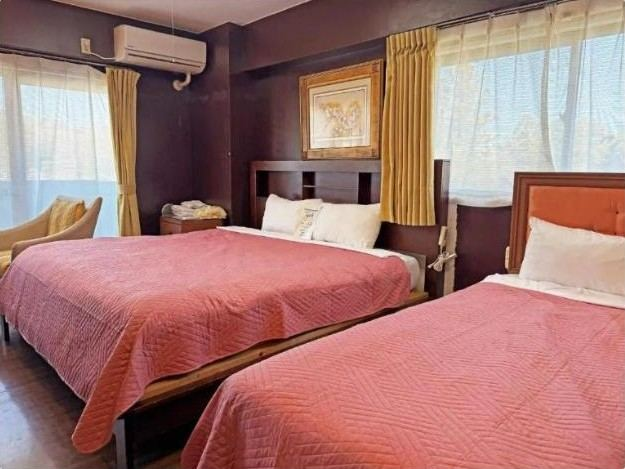
เลือกแล้วข้อควรรู้: นอนห้องโดมิทอรีรวมกับคนอื่น ห้องน้ำรวม · ราคารวมภาษีแล้ว (ลดส่งท้ายปี 20%) · เหลือ 7 เตียงพอดี ถ้าช้าอาจไม่ทัน
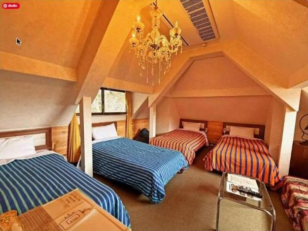
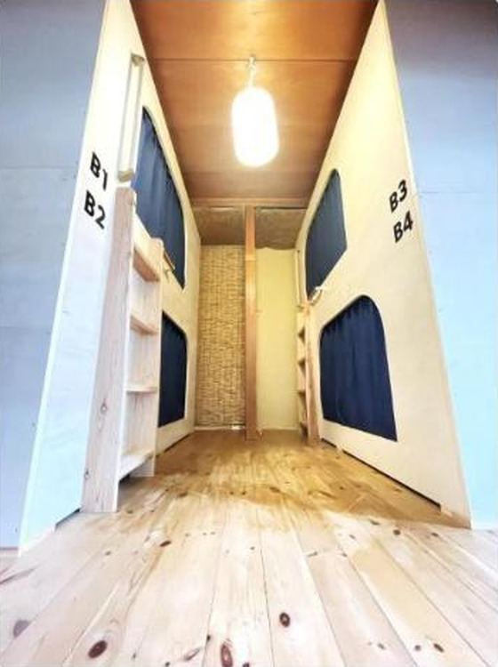
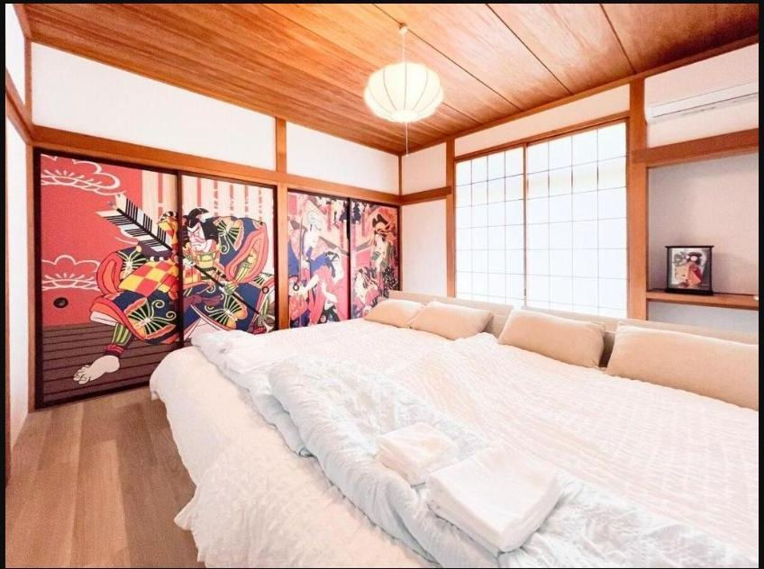
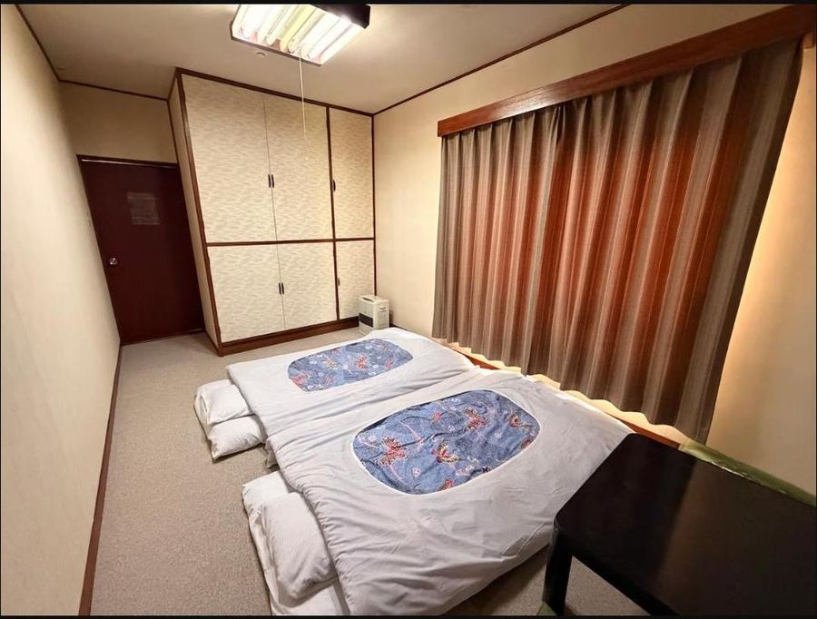
เลือกแล้วจุดเดียวที่ทำไม่ได้ตามงบ ฿1,000 — ค้นทั้ง Booking (3 รูปแบบการค้น) และ Airbnb แล้ว ปีใหม่ + ไฮซีซั่นสกี ทำให้ถูกสุดของทั้งเมืองคือ ฿1,167/คน/คืน เกินงบ ฿4,675 ส่วนที่เกินนี้ไปประหยัดคืนที่ Nikko กับ Tokyo ชดเชยได้แล้ว
ข้อควรรู้: เป็นลิสติ้งใหม่ ยังไม่มีรีวิวเลย — ความเสี่ยงอยู่ตรงนี้ · ได้ห้องส่วนตัวไม่ต้องแชร์กับคนอื่น · ห้องน้ำรวมแต่มีออนเซ็นในที่พัก · ยกเลิกฟรี จ่าย ฿0 วันนี้ — จองไว้ก่อนได้ไม่เสียหาย
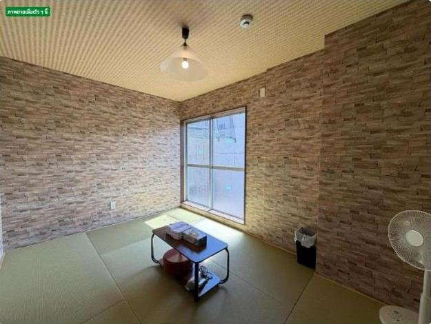
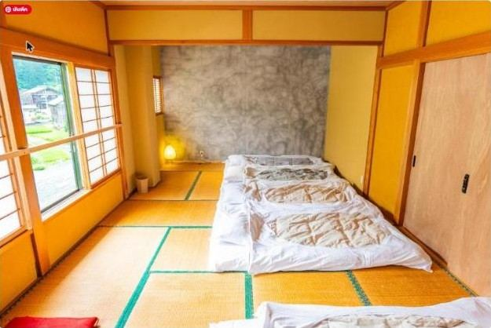
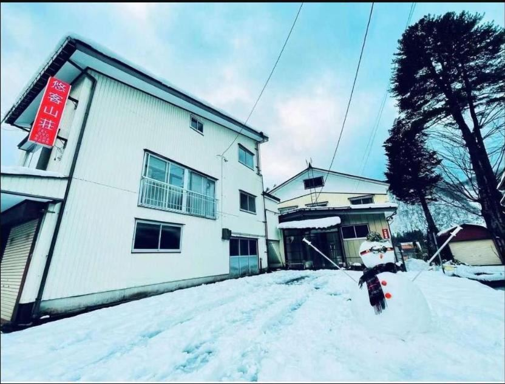
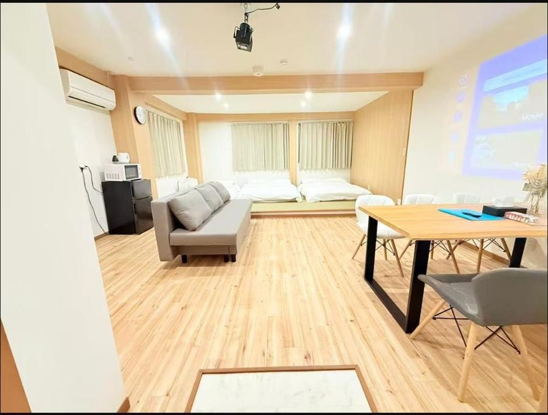
เลือกแล้วใน Asakusa เองไม่มีที่ไหนต่ำกว่า ฿7,000 — ถูกสุดคือ Hostel Wasabi ฿7,929 แต่เป็นโดมผู้ชายล้วน กลุ่มผสมใช้ไม่ได้ · Booking แจ้งว่า 72% ของที่พักใน Asakusa จองไม่ได้แล้วสำหรับคืน 1 ม.ค. · จึงขยับมาเขตข้าง ๆ ที่ยังเดินเที่ยว Asakusa ได้สะดวก
ข้อควรรู้: อยู่เขต Sumida ฝั่ง Skytree ติดกับ Asakusa — แผนวันที่ 7–8 (Sensoji, Hoppy Street, ขึ้นรถไฟไป Narita) ยังใช้ได้เหมือนเดิม · ห้องน้ำส่วนตัว · ยกเลิกฟรีถึง 31 ธ.ค.
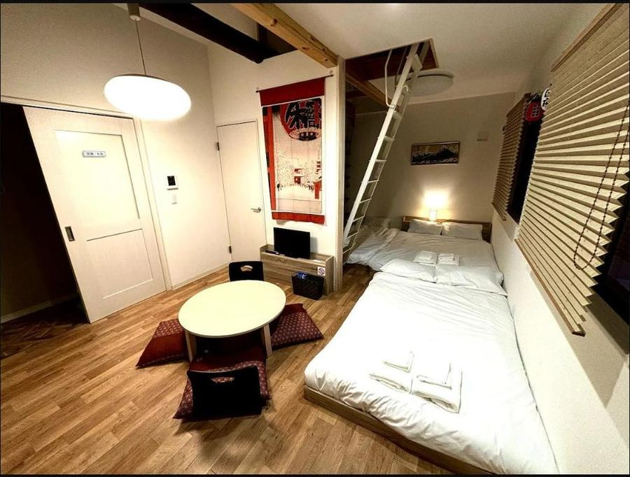
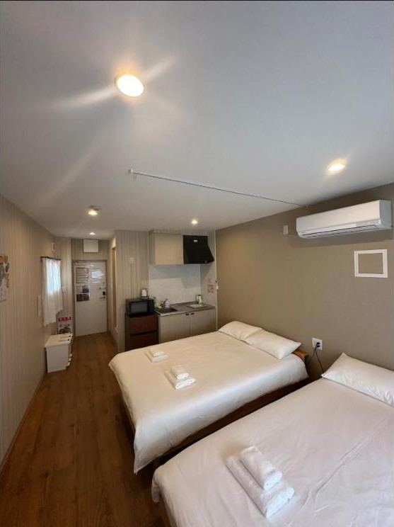
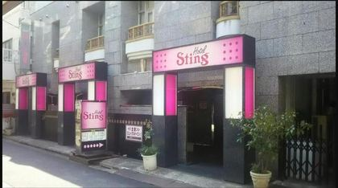
ชื่อสถานที่ที่ขีดเส้นใต้ กดเปิด Google Maps ได้เลย — เปิดในแท็บใหม่ ไม่หลุดจากหน้านี้
ชื่อสถานที่ที่ขีดเส้นใต้ กดเปิด Google Maps ได้เลย — เปิดในแท็บใหม่ ไม่หลุดจากหน้านี้
ขึ้นสะพานแดงศักดิ์สิทธิ์เหนือแม่น้ำไดยะ จุดเปิดทริปคลาสสิกของนิกโก้ หน้าหนาวราวสะพานมีหิมะเกาะ
ลิฟต์ลงไปจุดชมวิวใต้หน้าผา ปลายธันวาคมน้ำตกเริ่มเป็นน้ำแข็งบางส่วน
บ่อต้นน้ำพุร้อนกลางหุบเขาหิมะ เปิดเฉพาะ 10:00–15:00 ต้องเผื่อเวลาให้ทัน
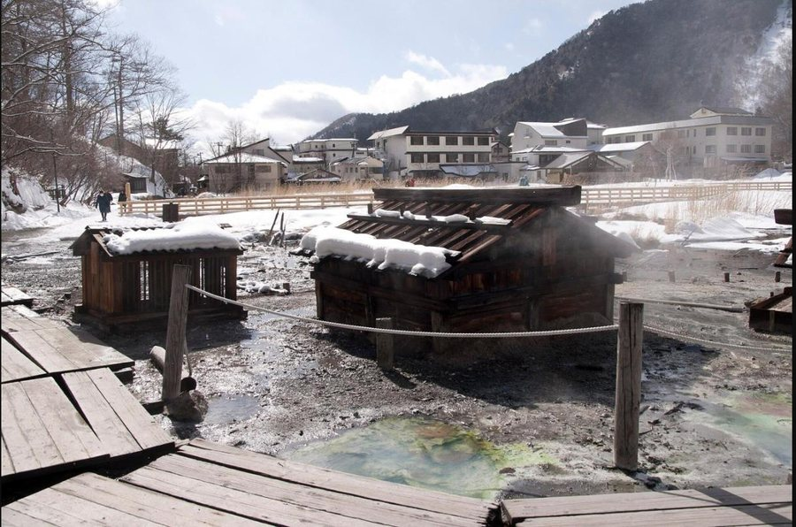
2 รูปศาลเจ้ามรดกโลก สุสานโทกุงาวะ อิเอยาสุ ฤดูหนาวเปิด 9:00–16:00
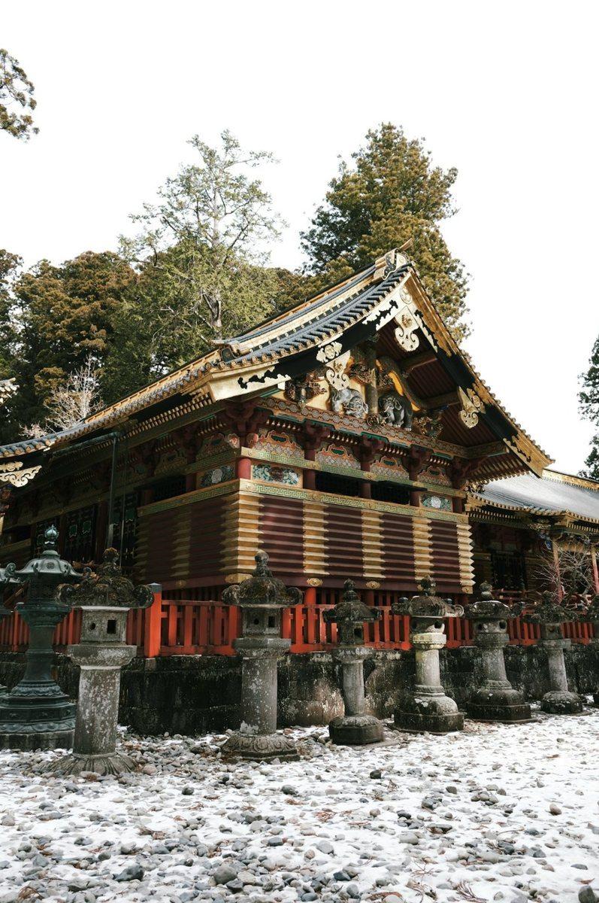
2 รูป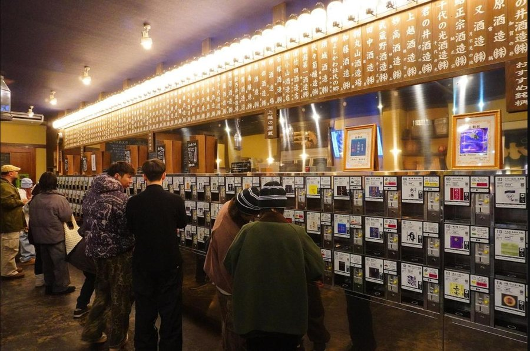
ขึ้นกระเช้าถึงยอดเขาและลิฟต์ต่อขึ้นจุดชมวิว ไม่ต้องเล่นสกีก็ขึ้นได้
ราคาซีซั่น 2025-26 · ปี 2026-27 ยังไม่ประกาศ · ถ้าเล่นสกี + เช่าชุด ≈ ¥10,000
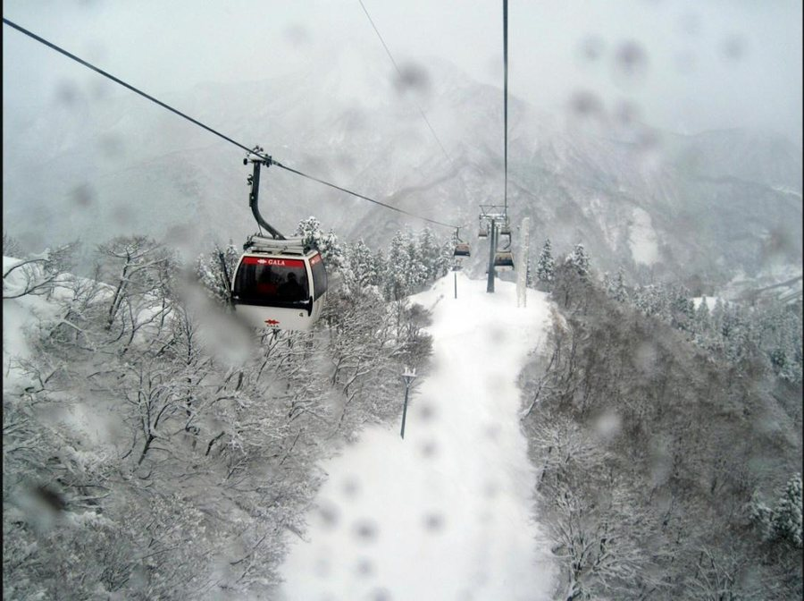
3 รูปอุโมงค์ศิลปะปลายทางเป็นบ่อน้ำสะท้อนหน้าผา ฤดูหนาวเปิด 9:00–15:30
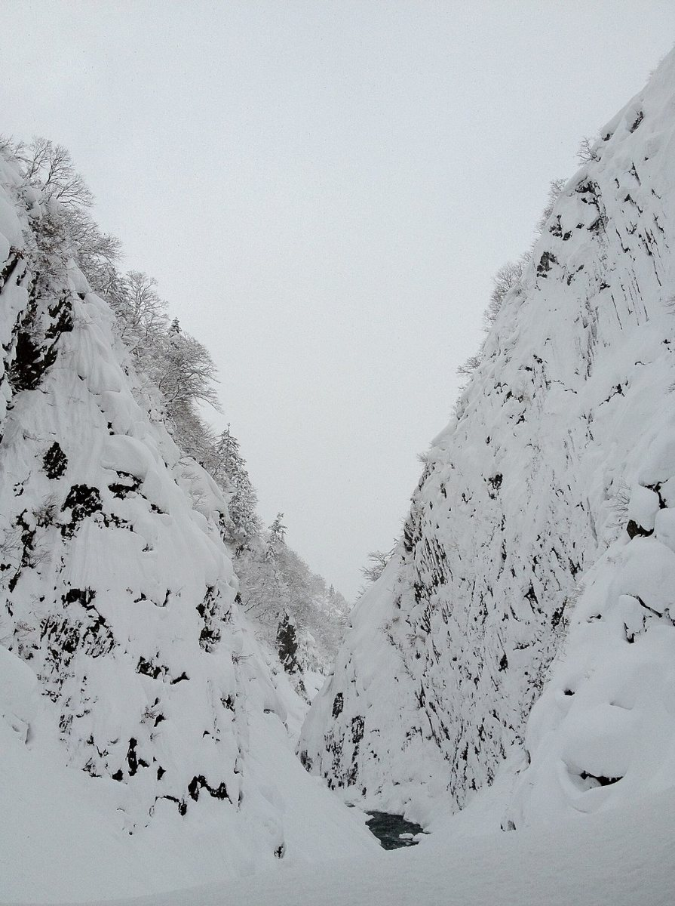
2 รูปแช่ออนเซ็นในเมืองสองรอบ หลังวันลานหิมะและคืนส่งท้ายปี